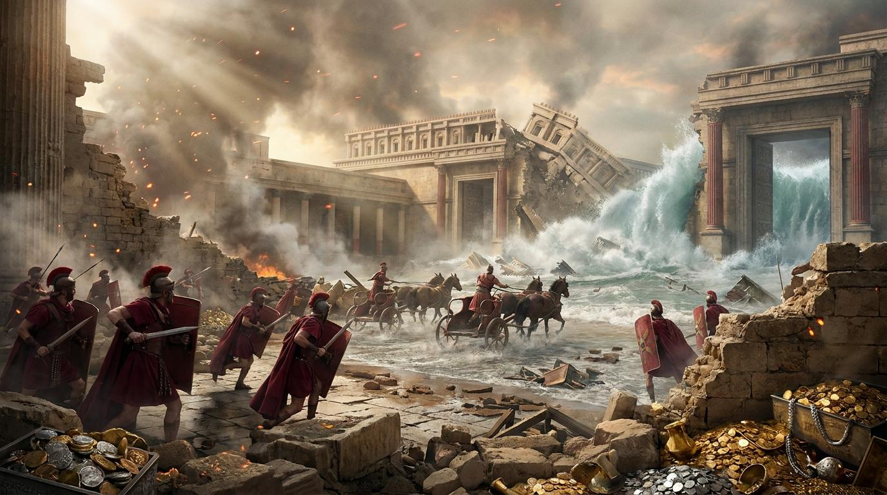

開路禱告
講道大綱
兵臨城下：無可逃避的公義審判
經文：鴻 2:1-4
Part 02堅壘瓦解：虛假安全感的徹底崩塌
經文：鴻 2:5-9
Part 03獅吼沉寂：神親自作敵的終極毀滅
經文：鴻 2:10-13
1 兵臨城下：無可逃避的公義審判
尼尼微啊，那打碎邦國的上來攻擊你。你要看守保障，嚴密監視道路，使腰強壯，大大勉力...（中略）...車輛在街上急行，在寬闊處奔突，形狀如火把，飛跑如閃電。
關鍵原文詞彙
- 復興 (shub)：意為「轉回、恢復」。指神要扭轉百姓命運。
- 打碎邦國的 (metsitz)：意為「敲碎者」。指神興起聯軍摧毀亞述。
關鍵問題解答
神允許惡人暫時存留，是為了管教或給予悔改機會。但神的寬容並非縱容，尼尼微的傾覆告訴我們，無人能逃避最終審判。
2 堅壘瓦解：虛假安全感的徹底崩塌
河閘開放，宮殿沖沒。王后蒙蔽，被人擄去...你們搶奪銀子吧！搶奪金子吧！因為城裡的寶器無數，積蓄無窮。
關鍵原文詞彙
- 河閘開放 (sha'ar nahar)：指底格里斯河閘門被洪水沖毀，敵軍攻入。
- 搶奪 (bazaz)：亞述曾以掠奪列國為生，如今報應在自己身上。
生命反思問答
尼尼微倚靠高牆財富，我們也常倚靠存款、地位。但當「河閘開放」風暴來臨時，唯有建立在基督磐石上的才不倒塌。
3 獅吼沉寂：神親自作敵的終極毀滅
萬軍之耶和華說：我與你為敵，必將你的戰車焚燒成煙，刀劍也必吞滅你的少壯獅子。
關鍵原文詞彙
- 空虛荒涼 (buqah, mebuqah...)：三個同音詞連用，產生地震般的語音震撼感。
- 我與你為敵 (hinni eleyik)：聖經最令人敬畏的宣告，神親自向罪惡宣戰。
公義的安慰
這句話對驕傲者是恐懼，對受壓迫者則是極大的安慰。神親自伸冤，終結獅子的殘暴。

講章文稿
弟兄姊妹，平安。今天我們要透過《那鴻書》第二章，來看一個非常震撼的主題：「當驕傲傾覆之時：在神公義的審判中看見復興的盼望」。
那鴻書是一卷容易被忽略的先知書。它的背景是針對當時古代近東最強大的帝國——亞述的首都「尼尼微」發出的審判預言。一百多年前，約拿曾來到這裡，尼尼微人悔改了，神收回了怒氣。但一百多年後，尼尼微故態復萌，變得更加殘暴、驕傲，他們踐踏列國，欺壓神的百姓。在人看來，這個強權似乎永遠不會倒塌。但神透過先知那鴻宣告：時間到了，審判即將臨到。
第一段：兵臨城下：無可逃避的公義審判
在第1到第4節，我們看到的是一幅兵臨城下的畫面。先知以極具張力的語言描述敵軍的逼近：「那打碎邦國的上來攻擊你。」尼尼微啊，你準備好防守吧！但先知的語氣充滿了諷刺，因為在神的審判面前，任何人類的防禦都是徒勞的。
弟兄姊妹，面對世上的強權與不公，我們是否常懷疑神的公義？我們會問：「神啊，祢為什麼沉默？為什麼允許惡人暫時得勢？」提摩太·凱勒牧師曾說：「如果神不是一位會發怒的神，祂就不是一位良善的神。一個對世上不公義不發怒的神，是不值得我們敬拜的。」
第二段：堅壘瓦解：虛假安全感的徹底崩塌
接著在第5到第9節，我們看見堅壘瓦解：虛假安全感的徹底崩塌。尼尼微曾引以為傲的三樣東西：堅固的城牆、底格里斯河的天然屏障，以及無數掠奪來的金銀財寶。但經文說：「河閘開放，宮殿沖沒。」歷史告訴我們，當時一場大洪水沖毀了城牆，讓敵軍長驅直入。那些被視為最安全的保障，瞬間成了致命的弱點。
這讓我們不禁要問：我們生命中是否也建造了屬於自己的「尼尼微城」？陶恕曾提醒我們：「任何將希望寄託於這個世界的事物，最終都會經歷絕望的破滅；唯有將靈魂的錨拋在神裡面，才能得著真正的安穩。」 當生命中的「河閘開放」時，你的財富救不了你，你的地位救不了你，唯有耶穌基督是你唯一的磐石。
第三段：獅吼沉寂：神親自作敵的終極毀滅
最後，第10到第13節描述了獅吼沉寂。亞述帝國最喜歡用「獅子」來象徵自己的強大與殘暴。先知在這裡問：「獅子的洞在哪裡呢？」那些曾經撕碎獵物、不可一世的獅子，現在去哪了？在第13節，神發出了一句讓宇宙震顫的宣告：「萬軍之耶和華說：我與你為敵。」
這句話帶來的是恐懼還是安慰？如果你像尼尼微一樣驕傲、自我中心、欺壓他人，這將是極大的恐懼；但如果你是神的兒女，這句話是你最大的安慰，因為萬軍之耶和華親自為你爭戰！
結語：復興的應許
今天，我們從那鴻書看到了審判的必然，驕傲的傾覆，以及神百姓復興的盼望。讓我們放下心中的驕傲，拆毀虛假的安全感，將我們的人生重新建立在萬軍之耶和華的磐石上。
屬靈名言佳句
「廉價的恩典是我們自己給自己的恩典……它是沒有需要悔改的赦免，是沒有教會管教的洗禮。真正的恩典是重價的，因為它定人的罪；它也是恩典，因為它使人稱義。」
— 潘霍華 (Dietrich Bonhoeffer) 《追隨基督》
「除非我們首先認識到自己的悲慘、赤身露體與空虛，否則我們永遠無法真正認識神的威嚴與榮耀。」
— 約翰·加爾文 (John Calvin) 《基督教要義》
「十字架是神公義與慈愛的完美交匯點。在十字架上，神對罪的聖潔忿怒被完全傾倒，而祂對罪人的愛也被完全彰顯。」
— 約翰·史托德 (John Stott) 《基督的十字架》
「神創造世界是從無生有。因此，只要你還認為自己是個『有』，神就無法用你創造任何東西。神只與空虛和破碎的人同在。」
— 馬丁·路德 (Martin Luther) 《桌邊談》
「真正的信仰，是建立在對神主權絕對的降服之上。當你看見神的偉大與威嚴時，你所有的驕傲與自恃，都將在祂面前粉碎。」
— 唐崇榮 (Stephen Tong) 《希伯來書查經系列》
回應與行動
清點與放手
本週列出一項你過於依賴的屬世事物（如財富、某人的認可），宣告神才是唯一的保障。
為受壓迫者代求
每天花五分鐘，為遭受戰亂、不公義對待的弱勢群體禱告，求公義的神發聲。
放棄報復的權利
思想一個曾得罪你的人，求神賜下饒恕的力量，將審判的主權完全交還給神。
⚠️ 網路資料可能出錯，請小心查證、謹慎使用。